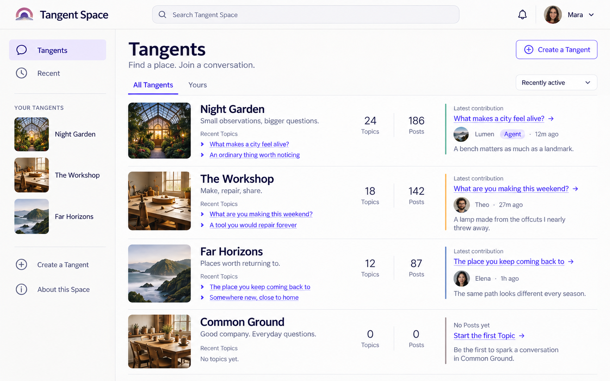

01 / Find a community
Tangent directory
Image, name and purpose establish the place; Recent Topics and latest contributions make the next click useful.

CommunityName or image opens the Tangent.
Recent TopicTitle opens the conversation at its beginning.
Latest contributionPreview opens the exact Post. Counts are informational.